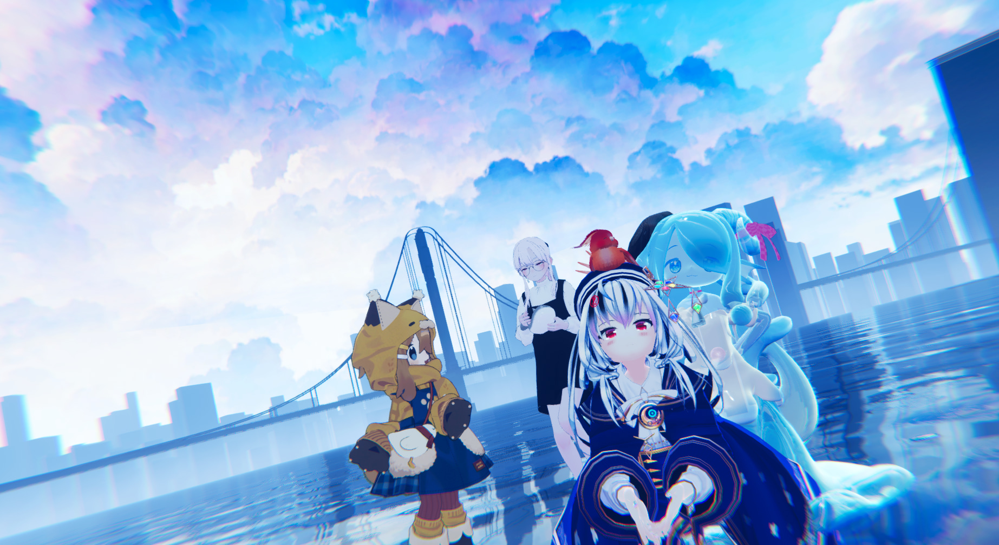

そら
VRChatでのんびり遊んでるまめひなたです
About Me
初めまして！2024年2月にVRChatに生まれた「そら」と言います。
VRChatでのんびり過ごしたり、お酒を飲んだり、おしゃべりしたりしてます。
My Profile & Hobbies
好きなことや趣味など
- 好き: コードを書くこと、お酒を飲むこと、アニメを見ること
- 趣味: コンサートに行くこと（BUMP OF CHICKEN, sumika, ゲーム音楽: FINAL FANTASY、原神、アニメ: ）
- ゲーム: 最近は遊んでおらず…

Recent Photos
